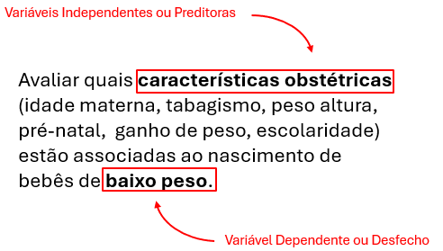
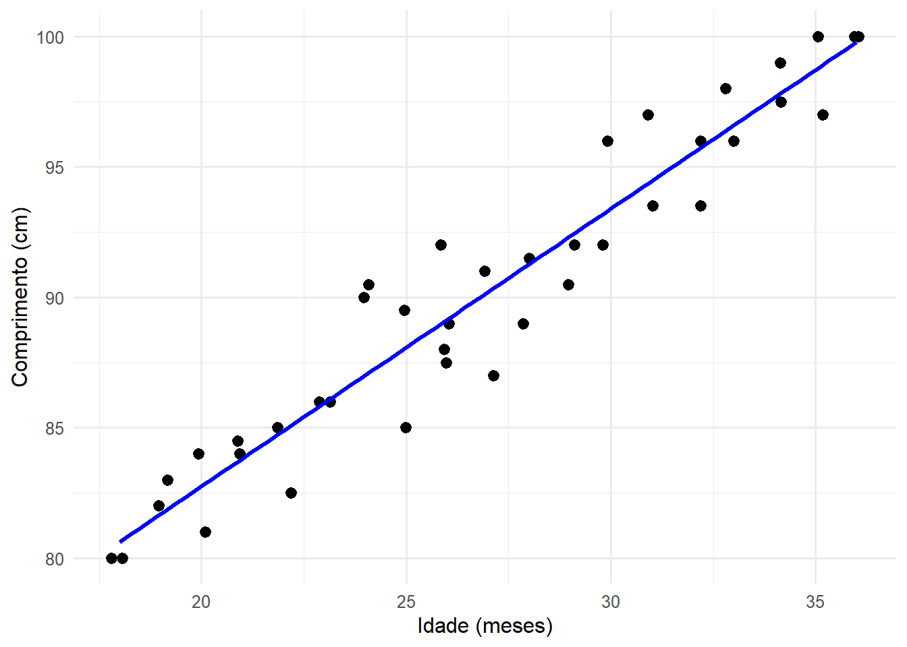
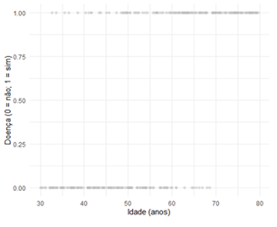
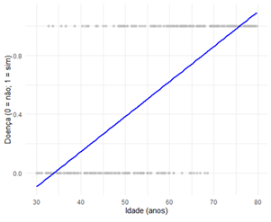
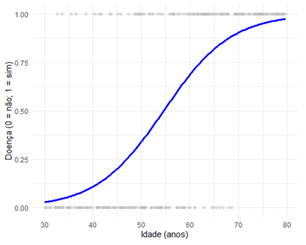
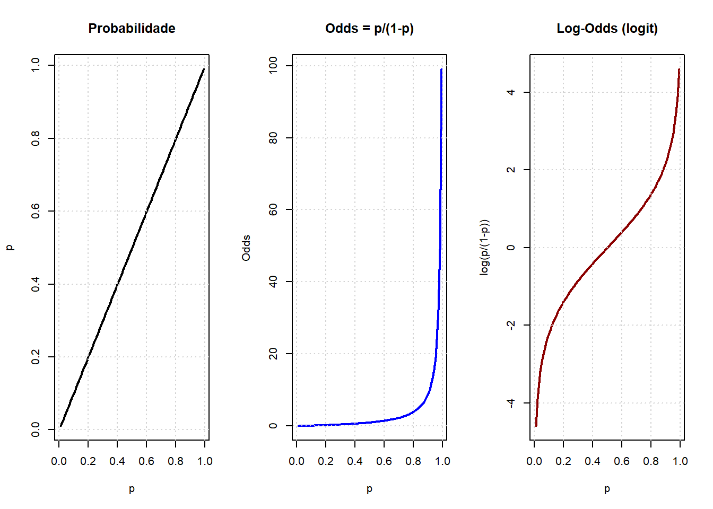
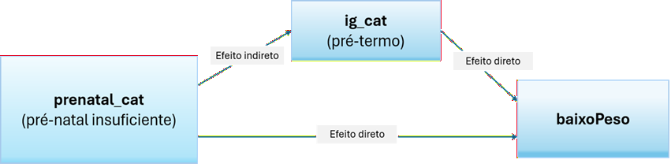
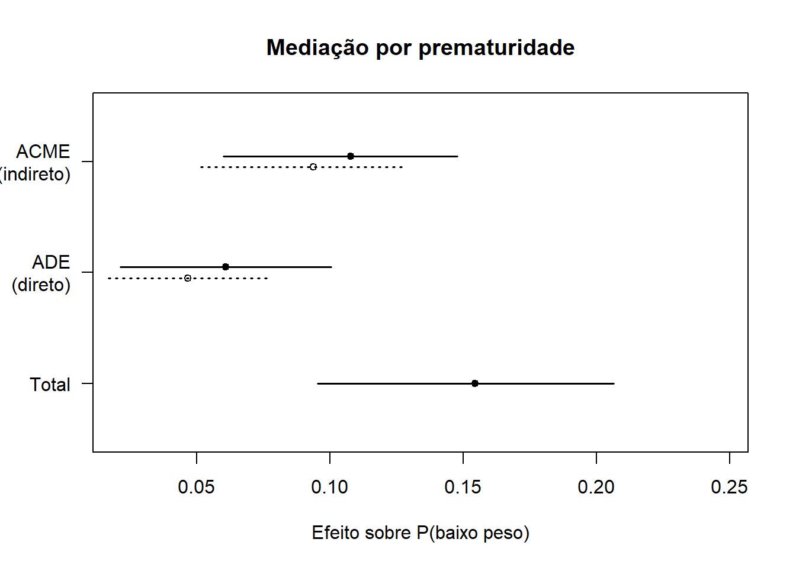
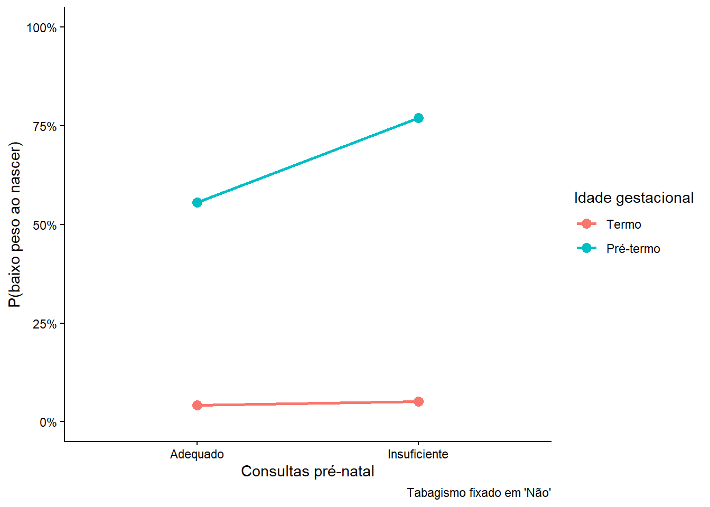
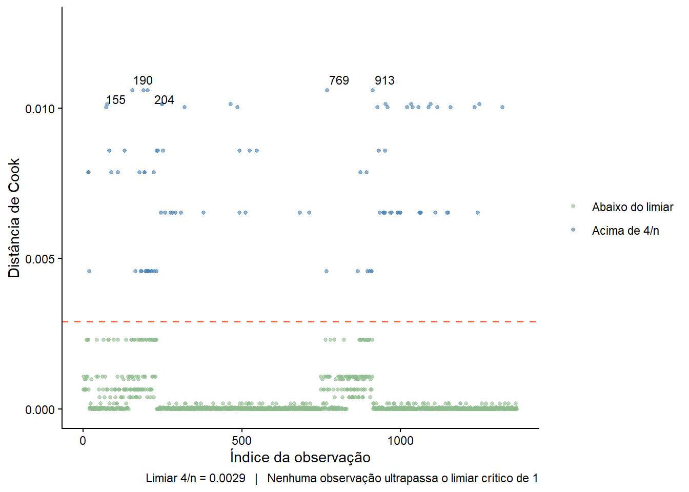

if(!require("pacman")){install.packages("pacman")}
pacman::p_load(car,
flextable,
ggrepel,
gtsummary,
labelled,
performance,
pROC,
rcompanion,
readxl,
sjPlot,
table1,
tidyverse)24 Regressão Logística Binária
24.1 Pacotes usados neste capítulo
Os seguintes pacotes devem estar instalados e carregados:
24.2 Introdução
Os dois modelos de regressão mais comuns são a regressão linear e a regressão logística. A regressão linear modela uma média e exige uma variável dependente (VD) numérica contínua; na regressão logística, a VD deve ser categórica. Em ambas, as variáveis independentes (VI) podem ser numéricas ou categóricas 1.
1 As variáveis categóricas podem entrar normalmente no modelo, desde que codificadas (ex.: variáveis dummy)
A regressão logística pode ser classificada em três tipos:
Regressão Logística Binária – é usada quando a VD é categórica nominal dicotômica ( sim/não, morto/vivo, homem/mulher, etc.).
Regressão Logística Multinomial – é usada quando a VD categórica tem 3 ou mais níveis (ex.: estágio do câncer, cor preferida, status de fumo, etc.).
Regressão Logística Ordinal – é usada quando a VD tem uma ordem natural como na escala de dor (1 a 10), status de fumante (não fumante, fumante leve, fumante pesado)
24.3 Regressão Logística Binária
A regressão logística binária (RLB) é utilizada quando o objetivo é estimar a chance de um indivíduo pertencer a uma das duas categorias possíveis (o desfecho binário, 0 ou 1), dada uma ou mais variáveis independentes ou preditoras (de qualquer tipo). Dito de outra forma, a RLB é uma abordagem classificatória que estima a relação entre uma variável dependente dicotômica e um conjunto de preditores (Figura 24.1). Foi desenvolvida, em 1958, como uma extensão do modelo linear, pelo estatístico britânico David Cox (1). Pertence a uma família de modelos, denominada Modelo Linear Generalizado (GLM) com distribuição binomial.

24.3.1 Função Logística ou Função Logito
A regressão linear simples (RLS) estima a relação entre uma variável dependente quantitativa contínua (Y) e uma variável explicativa contínua (X). Por exemplo, a relação entre o comprimento (Y) e a idade (X) de crianças é estimada pelo método dos Mínimos Quadrados Ordinários (MQO) e descrita pela equação da reta de regressão. Esta reta tenta predizer a variável resposta contínua a partir de uma variável preditora também contínua (Figura 24.2).
\[y = \beta_0 + \beta_{1} . x_{1} + \beta_{2} . x_{2} + ... + \beta_{n} . x_{n} \]

Entretanto, a probabilidade de ocorrência de uma variável resposta (variável desfecho - VD) quando ela é uma variável categórica dicotômica, variável dummy, 0 e 1, por exemplo, não ter doença ou ter doença (Figura 24.3), não consegue ser estimada, por exemplo, pela idade (variável independente - VI - contínua), usando o modelo da regressão linear.

Se for ajustada uma reta de regressão aos pontos usando o Método dos Mínimos Quadrados (Ordinary Least Squares), o gráfico (Figura 24.4) terá o aspecto onde a reta de regressão se estende abaixo de 0 e acima de 1 em relação ao eixo Y.

No entanto, a variável Y (Probabilidade de Doença) não pode assumir valores fora do limite de 0 e 1. Além disso, a variável desfecho dicotômica viola os pressupostos de normalidade e homoscedasticidade dos erros, pois segue a Distribuição de Bernoulli. Em consequência, a regressão linear não é adequada nessa situação.
A solução é usar a regressão logística binária, que lida com essas limitações, usando uma função de ligação (link function) que transforma a probabilidade em um valor que pode ser modelado linearmente e variar de \(-\infty\) a \(+\infty\). A função de ligação utilizada no modelo de regressão logística é a Logito (ou função logística), que resulta em uma curva em forma de ‘S’ chamada curva logística ou curva sigmoide (Figura 24.5). Ou seja, ela tem crescimento lento quando a probabilidade é muito baixa ou muito alta e crescimento rápido no meio (em torno 0,5). Isto reflete bem muitos fenômenos reais como risco de doença e probabilidade de sobrevivência.
\[\textrm{logito}= ln\left ( \frac{p}{1 - p} \right )\]

O termo \(\frac{p}{1-p}\) é a chance (odds), que representa a razão entre a probabilidade de ocorrência do evento (p) e a probabilidade de sua não ocorrência (\(1-p\)). O logito2 é o logaritmo natural (neperiano) dessa razão de probabilidades. Na regressão logística, o logito é modelado como uma função linear dos preditores, permitindo a estimação dos coeficientes (\(\beta\)), conhecida como função de ligação (link function) que especifica a ligação entre o componente aleatório (distribuição binomial) e o componente sistemático (combinação linear das variáveis independentes) do modelo GLM (2):
2 Também conhecido como log(odds) ou logito(p).
\[ln\left ( \frac{p}{1 - p} \right )=\beta_0 + \beta_{1} . x_{1} + \beta_{2} . x_{2} + ... + \beta_{n} . x_{n}\]
Através de manipulação algébrica, podemos isolar p para obter a probabilidade do evento Y=1 (sucesso) diretamente, garantindo que o valor final sempre esteja entre 0 e 1.
Iniciando com o logito, denotando-o por \(\eta\) 3:
3 Na regressão linear: \(\eta = \mu\), pois \(\eta\) é o previsor linear. Em termos de odds \(\eta=log(odds)\), ou seja, \(odds=e^{\eta}\).
\[ln\left ( \frac{p}{1 - p} \right )=\eta\]
onde \(\eta\) é uma combinação linear dos preditores:
\[\eta=\beta_0 + \beta_{1} . x_{1} + \beta_{2} . x_{2} + ... + \beta_{n} . x_{n}\]
Eliminando o logaritmo natural (ln) aplicando exponencial nos dois termos:
\[\frac{p}{1 - p}=e^{\eta}\]
Multiplicando ambos os lados por \((1 - p)\):
\[p=e^{\eta}(1-p)\]
Distribuindo o termo da direita:
\[p=e^{\eta}-e^{\eta}p\]
Logo:
\[p+e^{\eta}p=e^{\eta}\]
Fatorando p:
\[p( 1+ e^{\eta})=e^{\eta}\]
Isolando p:
\[p=\frac{e^{\eta}}{1+e^{\eta}}\]
Substituindo \(\eta\) pelo fator sistemático da GLM:
\[p=\frac{e^{\beta_0 + \beta_{1} . x_{1} + \beta_{2} . x_{2} + ... + \beta_{n} . x_{n}}}{1+e^{\beta_0 + \beta_{1} . x_{1} + \beta_{2} . x_{2} + ... + \beta_{n} . x_{n}}}\]
Essa equação garante que o resultado esteja sempre entre 0 e 1. A combinação linear (fator sistemático) pode assumir qualquer valor real, mas probabilidades não podem ser menores que 0 e nem maiores que 1. A função logito resolve isso:
Quando \(\eta \to +\infty\), \(p \to 1\); e \(\eta = -\infty, p \to 0\) . Ou seja, não importa o valor dos betas ou das variáveis, o resultado sempre será uma probabilidade válida.
24.3.2 Dados do exemplo
Contexto
O baixo peso ao nascer (BPN), definido pela Organização Mundial da Saúde (OMS) como o peso ao nascimento inferior a 2.500 gramas, permanece como um dos principais desafios globais de saúde pública. O desfecho é um determinante crítico da mortalidade neonatal e infantil, além de estar associado a repercussões negativas a longo prazo, incluindo atrasos no desenvolvimento cognitivo e maior suscetibilidade a doenças crônicas não transmissíveis na vida adulta, como hipertensão e diabetes.
Diante desse cenário, o presente exemplo tem como objetivo identificar e contrastar os fatores de risco para o baixo peso ao nascer em dois cenários analíticos distintos: na totalidade dos recém-nascidos e, especificamente, no subgrupo de nascidos a termo, utilizando dados de uma série consecutiva de partos realizados no Hospital Geral de Caxias do Sul.
O banco de dados a ser utilizado é dadosMater.xlsx (Seção 5.6) que será lido com a função read_excel() do pacote readxl:
dados <- readxl::read_excel("dados/dadosMater.xlsx")24.3.2.1 Tratamento dos dados
Inicialmente, serão selecionadas as variáveis que serão manipuladas na análise: id, idade_mae, altura, peso, anos_est, renda, estado_civil, prenatal, ganho_peso, para, ig, tipo-parto, sexo e peso_RN_rn que serão atribuídas a um objeto de nome dados_mater . Na sequência, usando o operador pipe será criada a variável baixoPeso como um fator, onde 0 = Normal e 1 = Evento (peso ao nascer < 2500g). Juntamente, serão categorizadas outras variáveis da forma adequada para rodar a regressão logística:
dados_mater <- dados |>
dplyr::select (id, idade_mae, altura, peso, fumo, anos_est,
renda, estado_civil, prenatal, ganho_peso, para,
ig, tipo_parto, sexo, peso_rn) |>
dplyr:: mutate(
baixoPeso = factor(ifelse(peso_rn < 2500, 1, 0), levels = c(0, 1)),
fumo_cat = factor(ifelse(fumo == 1, "Sim", "Não"), levels = c("Não", "Sim")),
prenatal_cat = factor(ifelse(prenatal == 2, "Insuficiente", "Adequado"),
levels = c("Adequado", "Insuficiente")),
renda_cat = factor(ifelse(renda < 3, "<3 SM", ">=3 SM"), levels = c(">=3 SM", "<3 SM")),
eCivil_cat = factor(ifelse(estado_civil == 1, "Mãe solo", "Companheiro"),
levels = c("Mãe solo", "Companheiro")),
escolaridade = factor(ifelse(anos_est < 4, "<4 anos", ">=4 anos"), levels = c(">=4 anos", "<4 anos")),
idade_cat = factor(ifelse(idade_mae < 20, "<20 anos", ">=20 anos"), levels = c(">=20 anos", "<20 anos")),
estatura_cat = factor(ifelse(altura < 1.50, "<150 cm", ">=150 cm"), levels = c(">=150 cm", "<150 cm")),
ganhoPeso_cat = factor(ifelse(ganho_peso < 10, "<10 kg", ">=10 kg"), levels = c(">=10 kg", "<10 kg")),
paridade = factor(ifelse(para == 0, "Primípara", "Multípara"), levels = c("Multípara", "Primípara")),
ig_cat = factor(ifelse(ig < 37, "Pré-termo", "Termo"), levels = c("Termo", "Pré-termo")))
str(dados_mater)tibble [1,368 × 26] (S3: tbl_df/tbl/data.frame)
$ id : num [1:1368] 1 2 3 4 5 6 7 8 9 10 ...
$ idade_mae : num [1:1368] 42 29 19 31 34 29 30 34 17 32 ...
$ altura : num [1:1368] 1.65 1.66 1.72 1.55 1.6 1.5 1.54 1.63 1.68 1.5 ...
$ peso : num [1:1368] 69.9 78 81 74 60 60 75.5 61 57 70 ...
$ fumo : num [1:1368] 2 2 2 2 2 1 1 2 2 2 ...
$ anos_est : num [1:1368] 3 11 9 5 7 8 4 6 10 1 ...
$ renda : num [1:1368] 1.45 2.41 1.93 1.45 0.48 0.96 1.2 2.41 2.17 0.72 ...
$ estado_civil : num [1:1368] 1 2 1 2 2 2 2 2 2 2 ...
$ prenatal : num [1:1368] 2 1 2 2 2 1 1 2 2 1 ...
$ ganho_peso : num [1:1368] 3.9 16.5 5 43 15 11.4 10.5 9 15 11.4 ...
$ para : num [1:1368] 5 0 0 1 2 1 2 1 0 4 ...
$ ig : num [1:1368] 29 33 33 33 33 33 33 33 34 34 ...
$ tipo_parto : num [1:1368] 2 2 1 1 2 1 2 1 1 2 ...
$ sexo : num [1:1368] 2 2 2 2 2 2 2 2 2 2 ...
$ peso_rn : num [1:1368] 1035 2300 1580 1840 2475 ...
$ baixoPeso : Factor w/ 2 levels "0","1": 2 2 2 2 2 2 2 2 2 2 ...
$ fumo_cat : Factor w/ 2 levels "Não","Sim": 1 1 1 1 1 2 2 1 1 1 ...
$ prenatal_cat : Factor w/ 2 levels "Adequado","Insuficiente": 2 1 2 2 2 1 1 2 2 1 ...
$ renda_cat : Factor w/ 2 levels ">=3 SM","<3 SM": 2 2 2 2 2 2 2 2 2 2 ...
$ eCivil_cat : Factor w/ 2 levels "Mãe solo","Companheiro": 1 2 1 2 2 2 2 2 2 2 ...
$ escolaridade : Factor w/ 2 levels ">=4 anos","<4 anos": 2 1 1 1 1 1 1 1 1 2 ...
$ idade_cat : Factor w/ 2 levels ">=20 anos","<20 anos": 1 1 2 1 1 1 1 1 2 1 ...
$ estatura_cat : Factor w/ 2 levels ">=150 cm","<150 cm": 1 1 1 1 1 1 1 1 1 1 ...
$ ganhoPeso_cat: Factor w/ 2 levels ">=10 kg","<10 kg": 2 1 2 1 1 1 1 2 1 1 ...
$ paridade : Factor w/ 2 levels "Multípara","Primípara": 1 2 2 1 1 1 1 1 2 1 ...
$ ig_cat : Factor w/ 2 levels "Termo","Pré-termo": 2 2 2 2 2 2 2 2 2 2 ...24.3.3 Probabilidade versus Chance (Odds)
A distinção entre probabilidade e chance (odds) é fundamental em estatística aplicada, especialmente em modelos como a regressão logística. Embora ambos os conceitos descrevam a possibilidade de ocorrência de um evento, eles o fazem de maneiras matemáticas diferentes e servem a propósitos distintos na modelagem (veja também Capítulo 9 e Seção 22.3.1).
24.3.3.1 Probabilidade
A probabilidade, na definição frequentista, expressa a proporção de vezes que um evento deve ocorrer em relação ao total de possibilidades. Seu valor está sempre no intervalo [0, 1].
\[ \textrm{probabilidade}=p=\frac{n}{N} \]
onde n = número de eventos favoráveis e N = número total de eventos.
Usando o dataframe dados_mater, pode-se calcular a probabilidade de gestantes fumantes na amostra:
tabFumo <- with(data = dados_mater, table(fumo_cat))
addmargins(tabFumo, FUN = sum)fumo_cat
Não Sim sum
1067 301 1368 p_fumantes <- tabFumo[2]/(tabFumo[1]+tabFumo[2])
p_fumantes Sim
0.2200292 Ou seja, 22% das gestantes são fumantes.
24.3.3.2 Chance (Odds)
A chance, ou odds, compara a probabilidade de um evento ocorrer com a probabilidade de ele não ocorrer (3). Diferentemente da probabilidade, as odds variam de 0 a\(\infty\).
\[ \textit{odds}=\frac{p}{1 - p} \]
Usando o mesmo exemplo das probabilidades:
\[ \textit{odds(fumar)}=\frac{0,22}{1 - 0,22}=\frac{0,22}{0,78}=0,28\]
Isso significa que, para cada gestante fumante, há aproximadamente 3,6 gestantes não fumantes (pois 1/0,28≈3,6).
Tanto a probabilidade como a odds descrevem o mesmo fenômeno, mas de forma diferente:
Probabilidade: “22% das gestantes são fumantes”.
Odds: “A razão entre fumantes e não fumantes é 0,28”.
24.3.3.3 Por que isto é importante?
Como visto, os modelos, como a regressão logística, não modelam diretamente a probabilidade, mas sim o logaritmo das odds (2):
\[ln\left ( \frac{p}{1 - p} \right )=\eta\]
Isto é útil porque o logaritimo neperiano das odds varia de \(-\infty\) a \(+\infty\), como um preditor linear. Além disso, facilita a interpretação dos coeficientes, pois ao exponenciar o coeficiente (3) se obtém a razão de chances (odds ratio):
\[e^{\beta_j}= \textit{razão de chances(odds ratio)}\]
Exemplo Aplicado
Suponha que, em um estudo, o coeficiente associado ao consumo de álcool seja β=0,7.
O efeito sobre as odds é:
\[e^{0,7}\approx 2,01\]
Interpretação
Pessoas que consomem álcool têm aproximadamente o dobro da chance de serem fumantes, comparadas às que não consomem.
Observe que isso não significa “o dobro da probabilidade”, mas sim “o dobro das odds”, o que é matematicamente distinto.
Probabilidade | Odds | Odds Ratio |
|---|---|---|
0,10 | 0,111 | 0,111 |
0,20 | 0,250 | 0,250 |
0,30 | 0,429 | 0,429 |
0,40 | 0,667 | 0,667 |
0,50 | 1,000 | 1,000 (referência) |
0,60 | 1,500 | 1,500 |
0,70 | 2,333 | 2,333 |
0,80 | 4,000 | 4,000 |
0,90 | 9,000 | 9,000 |

24.3.4 Análise exploratória e bivariada
Antes de avançar para o modelo multivariado, é importante conhecer a distribuição e as taxas brutas de baixo peso. Este trabalho será realizado pelas funções tbl_summary() e add_p() que fazem parte do pacote gtsummary (4). A função tbl_summary() constrói tabelas muito elegantes e a função add_p() é a responsável por calcular e adicionar automaticamente uma coluna de valores p à tabela. São ferramentas fundamentais para a criação de resumos tipo ("Tabela 1"). A sintaxe básica foi projetada para ser usada com o operador %>% ou |> (pipe).
theme_gtsummary_language("pt")
dados_mater |>
mutate(baixoPeso = factor(baixoPeso, levels = c(0, 1), labels = c("Não", "Sim"))) |>
select(baixoPeso, renda_cat, eCivil_cat, escolaridade, idade_cat, estatura_cat,
fumo_cat, paridade, prenatal_cat, ganhoPeso_cat, ig_cat) |>
tbl_summary(
by = baixoPeso,
percent = "row",
label = list(
renda_cat ~ "Renda Familiar",
eCivil_cat ~ "Estado Civil",
escolaridade ~ "Escolaridade Materna",
idade_cat ~ "Idade da Mãe",
estatura_cat ~ "Estatura Materna",
fumo_cat ~ "Tabagismo",
paridade ~ "Paridade",
prenatal_cat ~ "Consultas Pré-natal",
ganhoPeso_cat ~ "Ganho de Peso",
ig_cat ~ "Idade Gestacional"
)
) |>
add_p() |>
modify_spanning_header(c(stat_1, stat_2) ~ "**Baixo Peso ao Nascer**") |>
modify_header(label = "**Variável**")| Variável |
Baixo Peso ao Nascer
|
Valor-p2 | |
|---|---|---|---|
| Não N = 1,1261 |
Sim N = 2421 |
||
| Renda Familiar | 0.6 | ||
| >=3 SM | 187 (83%) | 37 (17%) | |
| <3 SM | 939 (82%) | 205 (18%) | |
| Estado Civil | 0.15 | ||
| Mãe solo | 311 (80%) | 78 (20%) | |
| Companheiro | 815 (83%) | 164 (17%) | |
| Escolaridade Materna | 0.4 | ||
| >=4 anos | 1,064 (83%) | 225 (17%) | |
| <4 anos | 62 (78%) | 17 (22%) | |
| Idade da Mãe | >0.9 | ||
| >=20 anos | 946 (82%) | 203 (18%) | |
| <20 anos | 180 (82%) | 39 (18%) | |
| Estatura Materna | 0.4 | ||
| >=150 cm | 1,079 (82%) | 229 (18%) | |
| <150 cm | 47 (78%) | 13 (22%) | |
| Tabagismo | <0.001 | ||
| Não | 899 (84%) | 168 (16%) | |
| Sim | 227 (75%) | 74 (25%) | |
| Paridade | 0.2 | ||
| Multípara | 752 (83%) | 151 (17%) | |
| Primípara | 374 (80%) | 91 (20%) | |
| Consultas Pré-natal | <0.001 | ||
| Adequado | 837 (87%) | 125 (13%) | |
| Insuficiente | 289 (71%) | 117 (29%) | |
| Ganho de Peso | <0.001 | ||
| >=10 kg | 769 (85%) | 138 (15%) | |
| <10 kg | 357 (77%) | 104 (23%) | |
| Idade Gestacional | <0.001 | ||
| Termo | 1,043 (95%) | 59 (5.4%) | |
| Pré-termo | 83 (31%) | 183 (69%) | |
| 1 n (%) | |||
| 2 Teste qui-quadrado de independência | |||
Com base nos valores p da análise bivariada, recomenda-se incluir ig_cat, fumo_cat, prenatal_cat, ganhoPeso_cat, estado_civil_cat e paridade. O critério de inclusão está baseado no valor p < 0,20 na análise bivariada , decisão habitual na regressão logística (3).
Atenção importante sobre ig_cat: Idade gestacional é o maior determinante individual do baixo peso — prematuro quase sempre tem baixo peso. Incluí-la no modelo geral faz sentido descritivo, mas ela pode ser um mediador na cadeia causal (ex.: tabagismo → prematuridade → baixo peso), não um confundidor. Por isso o contexto do documento já prevê dois modelos distintos: um com toda a amostra (incluindo ig_cat) e outro restrito aos nascidos a termo (onde ig_cat deixa de ser pertinente).
24.3.5 Ajuste do modelo GLM global
O modelo_global será construído com a função nativa glm() – generalized linear model - usada para aplicar uma regressão logística no R. Sua funcionalidade é idêntica à função lm() da regressão linear. Necessita alguns argumentos:
formula \(\to\) objeto da classe formula. Um preditor típico tem o formato
resposta ~ preditorem queresposta, na regressão logística binária, é uma variável dicotômica e o preditor pode ser uma série de variáveis numéricas ou categóricas;family \(\to\) uma descrição da distribuição de erro e função de link a ser usada no modelo
glm, pode ser uma string que nomeia uma função de family. O padrão éfamily = gaussian(). No caso da regressão logística binária,family = binomial()oufamily = binomial (link =”logit”). Para outras informações, usehelp(glm)ouhelp(family);data \(\to\) banco de dados.
Dentro dos parênteses da função glm(), são fornecidas informações essenciais sobre o modelo. À esquerda do til (~), encontra-se a variável dependente, que deve estar codificada como 0 e 1 para que a função a interprete corretamente como binária. Após o til (~), são listadas as variáveis preditoras. Quando se utiliza um ponto (~.), isso indica a inclusão de todas as variáveis preditoras disponíveis. Já o uso do asterisco (*) entre duas variáveis preditoras especifica que, além dos efeitos principais, também deve ser considerado um termo de interação entre elas. No exemplo apresentado, nesta análise inicial, não será solicitada os efeitos da interação. Por fim, após a vírgula, define-se que a distribuição utilizada é a binomial. Como a função glm usa logit como link padrão para uma variável de desfecho binomial, não há necessidade de especificá-lo explicitamente no modelo (5).
modelo_global <- glm(
baixoPeso ~ fumo_cat + prenatal_cat + ganhoPeso_cat + ig_cat + eCivil_cat + paridade,
data = dados_mater,
family = binomial(link = "logit")
)A saída da função glm() fornece os coeficientes, da mesma forma como na regressão linear, que estima o efeito das variáveis preditoras sobre a chance de ocorrência do desfecho (no exemplo, sucesso = 1; no modelo, ter peso < 2500g).
Para exibir os resultados usa-se:
summary(modelo_global)
Call:
glm(formula = baixoPeso ~ fumo_cat + prenatal_cat + ganhoPeso_cat +
ig_cat + eCivil_cat + paridade, family = binomial(link = "logit"),
data = dados_mater)
Coefficients:
Estimate Std. Error z value Pr(>|z|)
(Intercept) -3.49455 0.27315 -12.794 < 2e-16 ***
fumo_catSim 0.73732 0.22277 3.310 0.000934 ***
prenatal_catInsuficiente 0.58794 0.20052 2.932 0.003368 **
ganhoPeso_cat<10 kg 0.26302 0.19800 1.328 0.184051
ig_catPré-termo 3.60042 0.19316 18.640 < 2e-16 ***
eCivil_catCompanheiro 0.06333 0.21281 0.298 0.766028
paridadePrimípara 0.29110 0.20454 1.423 0.154685
---
Signif. codes: 0 '***' 0.001 '**' 0.01 '*' 0.05 '.' 0.1 ' ' 1
(Dispersion parameter for binomial family taken to be 1)
Null deviance: 1276.78 on 1367 degrees of freedom
Residual deviance: 766.96 on 1361 degrees of freedom
AIC: 780.96
Number of Fisher Scoring iterations: 5Numericamente, os coeficientes de regressão logística não são facilmente interpretáveis em escala bruta, pois estão representados como log (odds) ou logito . Para tornar mais simples, inverte-se a transformação logística, exponenciando os coeficientes (exp(coeficiente)). Isso faz com que os coeficientes se transformem em razões de chance (odds ratio), ficando mais intuitivos facilitando a interpretação. Isso pode ser realizado via a função tbl_regression():
modelo_global |>
tbl_regression(
exponentiate = TRUE,
label = list(
fumo_cat ~ "Tabagismo",
prenatal_cat ~ "Consultas Pré-natal",
ganhoPeso_cat ~ "Ganho de Peso",
ig_cat ~ "Idade Gestacional",
eCivil_cat ~ "Estado Civil",
paridade ~ "Paridade"
)
) |>
bold_p() |>
bold_labels()| Características | OR | 95% IC | Valor-p |
|---|---|---|---|
| Tabagismo | |||
| Não | — | — | |
| Sim | 2.09 | 1.35, 3.24 | <0.001 |
| Consultas Pré-natal | |||
| Adequado | — | — | |
| Insuficiente | 1.80 | 1.21, 2.67 | 0.003 |
| Ganho de Peso | |||
| >=10 kg | — | — | |
| <10 kg | 1.30 | 0.88, 1.92 | 0.2 |
| Idade Gestacional | |||
| Termo | — | — | |
| Pré-termo | 36.6 | 25.3, 53.9 | <0.001 |
| Estado Civil | |||
| Mãe solo | — | — | |
| Companheiro | 1.07 | 0.70, 1.62 | 0.8 |
| Paridade | |||
| Multípara | — | — | |
| Primípara | 1.34 | 0.89, 2.00 | 0.2 |
| Abreviações: IC = Intervalo de Confiança, OR = Razão de chances | |||
Após o ajuste, três variáveis permaneceram estatisticamente significativas: idade gestacional pré-termo (o preditor de maior magnitude, OR = 36,6), tabagismo (OR = 2,09) e consultas pré-natal insuficientes (OR = 1,80). As variáveis ganhoPeso_cat, eCivil_cat e paridade, embora selecionadas pela análise bivariada (p < 0,20), perderam significância no modelo ajustado, sugerindo que seus efeitos observados na bivariada eram mediados ou confundidos pelas demais variáveis. Um modelo reduzido, contendo apenas as três variáveis significativas, é recomendado para a etapa seguinte.
24.3.6 Modelo reduzido
modelo_reduzido <- glm(
baixoPeso ~ ig_cat + fumo_cat + prenatal_cat,
data = dados_mater,
family = binomial(link = "logit"))24.3.6.1 Comparação via AIC/BIC e Teste de Razão de Verossimilhança
Os dois modelos são comparados pelo AIC e BIC (quanto menor, melhor) e pelo Teste de Razão de Verossimilhança (TRV), que avalia se a remoção das três variáveis provoca perda significativa de ajuste.
data.frame(
Modelo = c("Global (6 preditores)", "Reduzido (3 preditores)"),
AIC = round(c(AIC(modelo_global), AIC(modelo_reduzido)), 2),
BIC = round(c(BIC(modelo_global), BIC(modelo_reduzido)), 2)
) |>
flextable::flextable() |>
flextable::bold(j = 1) |>
flextable::autofit()Modelo | AIC | BIC |
|---|---|---|
Global (6 preditores) | 780.96 | 817.51 |
Reduzido (3 preditores) | 778.62 | 799.51 |
anova(modelo_reduzido, modelo_global, test = "LRT")Analysis of Deviance Table
Model 1: baixoPeso ~ ig_cat + fumo_cat + prenatal_cat
Model 2: baixoPeso ~ fumo_cat + prenatal_cat + ganhoPeso_cat + ig_cat +
eCivil_cat + paridade
Resid. Df Resid. Dev Df Deviance Pr(>Chi)
1 1364 770.62
2 1361 766.96 3 3.6606 0.3005O TRV não foi significativo (p = 0,30), indicando que a remoção de ganhoPeso_cat, eCivil_cat e paridade não deteriorou o ajuste do modelo. O modelo reduzido é preferível por ser mais parcimonioso — além de apresentar AIC (778,6) e BIC (799,5) menores do que o modelo global (AIC = 781,0; BIC = 817,5).
24.3.6.2 Resultados do modelo reduzido
tbl_global_reg <- modelo_global |>
tbl_regression(
exponentiate = TRUE,
label = list(
fumo_cat ~ "Tabagismo",
prenatal_cat ~ "Consultas Pré-natal",
ganhoPeso_cat ~ "Ganho de Peso",
ig_cat ~ "Idade Gestacional",
eCivil_cat ~ "Estado Civil",
paridade ~ "Paridade"
)
) |>
bold_p() |>
bold_labels()
tbl_reduzido_reg <- modelo_reduzido |>
tbl_regression(
exponentiate = TRUE,
label = list(
ig_cat ~ "Idade Gestacional",
fumo_cat ~ "Tabagismo",
prenatal_cat ~ "Consultas Pré-natal"
)
) |>
bold_p() |>
bold_labels()
tbl_merge(
list(tbl_global_reg, tbl_reduzido_reg),
tab_spanner = c("**Modelo Global**", "**Modelo Reduzido**"))| Características |
Modelo Global
|
Modelo Reduzido
|
||||
|---|---|---|---|---|---|---|
| OR | 95% IC | Valor-p | OR | 95% IC | Valor-p | |
| Tabagismo | ||||||
| Não | — | — | — | — | ||
| Sim | 2.09 | 1.35, 3.24 | <0.001 | 1.93 | 1.26, 2.97 | 0.002 |
| Consultas Pré-natal | ||||||
| Adequado | — | — | — | — | ||
| Insuficiente | 1.80 | 1.21, 2.67 | 0.003 | 1.82 | 1.24, 2.67 | 0.002 |
| Ganho de Peso | ||||||
| >=10 kg | — | — | ||||
| <10 kg | 1.30 | 0.88, 1.92 | 0.2 | |||
| Idade Gestacional | ||||||
| Termo | — | — | — | — | ||
| Pré-termo | 36.6 | 25.3, 53.9 | <0.001 | 37.2 | 25.7, 54.8 | <0.001 |
| Estado Civil | ||||||
| Mãe solo | — | — | ||||
| Companheiro | 1.07 | 0.70, 1.62 | 0.8 | |||
| Paridade | ||||||
| Multípara | — | — | ||||
| Primípara | 1.34 | 0.89, 2.00 | 0.2 | |||
| Abreviações: IC = Intervalo de Confiança, OR = Razão de chances | ||||||
24.3.7 Modelo restrito aos nascidos a termo
A análise anterior inclui toda a amostra, com ig_cat dominando o modelo, funcionando como um efeito sugador.
Para identificar fatores de risco independentes da prematuridade, o modelo é ajustado apenas nos nascidos a termo (ig_cat == "Termo").
24.3.7.1 Subconjunto a termo
dados_termo <- dados_mater |>
dplyr::filter(ig_cat == "Termo")
cat("N a termo:", nrow(dados_termo), "\n")N a termo: 1102 cat("BPN a termo:", sum(dados_termo$baixoPeso == 1), "\n")BPN a termo: 59 cat("% BPN a termo:", round(mean(dados_termo$baixoPeso == 1) * 100, 1), "%\n")% BPN a termo: 5.4 %24.3.7.2 Análise bivariada — nascidos a termo
dados_termo |>
dplyr::mutate(baixoPeso = factor(baixoPeso, levels = c(0, 1), labels = c("Não", "Sim"))) |>
dplyr::select(baixoPeso, renda_cat, eCivil_cat, escolaridade, idade_cat,
estatura_cat, fumo_cat, paridade, prenatal_cat, ganhoPeso_cat) |>
tbl_summary(
by = baixoPeso,
percent = "row",
label = list(
renda_cat ~ "Renda Familiar",
eCivil_cat ~ "Estado Civil",
escolaridade ~ "Escolaridade Materna",
idade_cat ~ "Idade da Mãe",
estatura_cat ~ "Estatura Materna",
fumo_cat ~ "Tabagismo",
paridade ~ "Paridade",
prenatal_cat ~ "Consultas Pré-natal",
ganhoPeso_cat ~ "Ganho de Peso"
)
) |>
add_p() |>
modify_spanning_header(c(stat_1, stat_2) ~ "**Baixo Peso ao Nascer**") |>
modify_header(label = "**Variável**")| Variável |
Baixo Peso ao Nascer
|
Valor-p2 | |
|---|---|---|---|
| Não N = 1,0431 |
Sim N = 591 |
||
| Renda Familiar | 0.038 | ||
| >=3 SM | 178 (98%) | 4 (2.2%) | |
| <3 SM | 865 (94%) | 55 (6.0%) | |
| Estado Civil | 0.7 | ||
| Mãe solo | 289 (95%) | 15 (4.9%) | |
| Companheiro | 754 (94%) | 44 (5.5%) | |
| Escolaridade Materna | 0.12 | ||
| >=4 anos | 992 (95%) | 53 (5.1%) | |
| <4 anos | 51 (89%) | 6 (11%) | |
| Idade da Mãe | 0.4 | ||
| >=20 anos | 877 (95%) | 47 (5.1%) | |
| <20 anos | 166 (93%) | 12 (6.7%) | |
| Estatura Materna | 0.3 | ||
| >=150 cm | 998 (95%) | 55 (5.2%) | |
| <150 cm | 45 (92%) | 4 (8.2%) | |
| Tabagismo | 0.005 | ||
| Não | 831 (96%) | 38 (4.4%) | |
| Sim | 212 (91%) | 21 (9.0%) | |
| Paridade | 0.7 | ||
| Multípara | 698 (95%) | 38 (5.2%) | |
| Primípara | 345 (94%) | 21 (5.7%) | |
| Consultas Pré-natal | 0.4 | ||
| Adequado | 779 (95%) | 41 (5.0%) | |
| Insuficiente | 264 (94%) | 18 (6.4%) | |
| Ganho de Peso | 0.2 | ||
| >=10 kg | 718 (95%) | 36 (4.8%) | |
| <10 kg | 325 (93%) | 23 (6.6%) | |
| 1 n (%) | |||
| 2 Teste qui-quadrado de independência; Teste exato de Fisher | |||
Na amostra restrita aos nascidos a termo, as variáveis com p < 0,20 na análise bivariada foram: tabagismo (p = 0,005), renda familiar (p = 0,038) e escolaridade materna (p = 0,12). As consultas pré-natal, significativas na amostra total, perderam associação neste subgrupo — sugerindo que seu efeito estava mediado pela prematuridade.
24.3.7.3 Ajuste do modelo GLM — nascidos a termo
modelo_termo <- glm(
baixoPeso ~ fumo_cat + renda_cat + escolaridade + ganhoPeso_cat,
data = dados_termo,
family = binomial(link = "logit")
)
modelo_termo |>
tbl_regression(
exponentiate = TRUE,
label = list(
fumo_cat ~ "Tabagismo",
renda_cat ~ "Renda Familiar",
escolaridade ~ "Escolaridade Materna",
ganhoPeso_cat ~ "Ganho de Peso"
)
) |>
bold_p() |>
bold_labels() |>
modify_header(label = "**Variável**") |>
modify_spanning_header(everything() ~ "**Nascidos a Termo — Baixo Peso ao Nascer**")
Nascidos a Termo — Baixo Peso ao Nascer
|
|||
|---|---|---|---|
| Variável | OR | 95% IC | Valor-p |
| Tabagismo | |||
| Não | — | — | |
| Sim | 2.06 | 1.16, 3.57 | 0.011 |
| Renda Familiar | |||
| >=3 SM | — | — | |
| <3 SM | 2.63 | 1.06, 8.81 | 0.066 |
| Escolaridade Materna | |||
| >=4 anos | — | — | |
| <4 anos | 1.75 | 0.64, 4.03 | 0.2 |
| Ganho de Peso | |||
| >=10 kg | — | — | |
| <10 kg | 1.31 | 0.75, 2.25 | 0.3 |
| Abreviações: IC = Intervalo de Confiança, OR = Razão de chances | |||
No modelo ajustado restrito aos nascidos a termo, apenas o tabagismo permaneceu estatisticamente significativo (p = 0,011). A renda familiar apresentou tendência limítrofe (p = 0,07), sugerindo relevância clínica ainda que sem significância estatística formal — possivelmente reflexo do número reduzido de eventos neste subgrupo (n = 59 casos de BPN a termo). As demais variáveis não atingiram significância após o ajuste mútuo.
24.3.8 Avaliação do ajuste do modelo restrito
O teste de Hosmer-Lemeshow clássico não é aplicável neste modelo: como todos os preditores são categóricos binários, o modelo gera apenas 14 probabilidades previstas distintas (máximo possível: 2⁴ = 16 padrões de covariáveis), insuficientes para formar os 10 grupos (decis) exigidos pelo teste. Alternativas mais adequadas são a AUC 4 (discriminação) e o teste de razão de verossimilhança em relação ao modelo nulo.
4 AUC = Area Under Curve, área sob a curva ROC (ver também Seção 21.6)
library(pROC)
# AUC
roc_termo <- pROC::roc(dados_termo$baixoPeso, fitted(modelo_termo), quiet = TRUE)
# TRV vs. modelo nulo
modelo_nulo <- glm(baixoPeso ~ 1, data = dados_termo, family = binomial)
trv <- anova(modelo_nulo, modelo_termo, test = "LRT")
data.frame(
Medida = c("AUC (discriminação)",
"IC 95% da AUC",
"TRV vs. modelo nulo — χ²(4)",
"Valor-p (TRV)"),
Valor = c(
round(pROC::auc(roc_termo), 3),
paste0(round(pROC::ci.auc(roc_termo)[1], 3), " – ",
round(pROC::ci.auc(roc_termo)[3], 3)),
round(trv$Deviance[2], 2),
format.pval(trv$`Pr(>Chi)`[2], digits = 3)
)
) |>
flextable::flextable() |>
flextable::autofit()Medida | Valor |
|---|---|
AUC (discriminação) | 0.618 |
IC 95% da AUC | 0.544 – 0.692 |
TRV vs. modelo nulo — χ²(4) | 14.29 |
Valor-p (TRV) | 0.00643 |
O modelo apresenta AUC = 0,618 (IC 95%: 0,544–0,692), indicando discriminação modesta — esperada dada a pequena prevalência de BPN a termo (5,4%) e o número limitado de preditores. O TRV confirma que o conjunto de variáveis melhora significativamente o ajuste em relação ao modelo sem preditores (χ²(4) = 14,29, p = 0,006).
24.4 Análise de Mediação: papel da prematuridade
A análise bivariada e o modelo global sugeriram que o efeito das consultas pré-natal insuficientes sobre o BPN pode ser parcialmente mediado pela prematuridade (ig_cat). Para quantificar essa mediação, foi aplicado o modelo causal de (6), implementado no pacote mediation (7), com 1.000 replicações bootstrap.
O diagrama causal testado é mostrado na Figura 24.7:

library(mediation)
dados_med <- dados_mater |>
dplyr::mutate(
ig_num = as.integer(ig_cat == "Pré-termo"),
prenatal_num = as.integer(prenatal_cat == "Insuficiente"),
fumo_num = as.integer(fumo_cat == "Sim"),
bp_num = as.integer(baixoPeso == 1)
)
mod_mediador <- glm(ig_num ~ prenatal_num + fumo_num, data = dados_med,
family = binomial(link = "logit"))
mod_desfecho <- glm(bp_num ~ prenatal_num + ig_num + fumo_num, data = dados_med,
family = binomial(link = "logit"))
set.seed(4821)
med_result <- mediate(
mod_mediador, mod_desfecho,
treat = "prenatal_num",
mediator = "ig_num",
boot = TRUE, sims = 1000
)
plot(med_result,
main = "Mediação por prematuridade",
xlab = "Efeito sobre P(baixo peso)",
labels = c("ACME\n(indireto)", "ADE\n(direto)", "Total"))
Componente | Estimativa | IC 95% | Valor-p |
|---|---|---|---|
Efeito total | 0.154 | 0.095 – 0.207 | <2e-16 |
Efeito indireto — ACME (via prematuridade) | 0.101 | 0.056 – 0.139 | <2e-16 |
Efeito direto — ADE | 0.054 | 0.019 – 0.088 | <2e-16 |
Proporção mediada | 65.2% | 47.5% – 83.5% | <2e-16 |
A análise revelou que aproximadamente 65% do efeito total das consultas pré-natal insuficientes sobre o baixo peso ao nascer é mediado pela prematuridade (ACME5 médio = 0,101; IC 95%: 0,056–0,139; p < 0,001). O efeito direto — independente da prematuridade — permanece significativo mas de menor magnitude (ADE6 médio = 0,054; IC 95%: 0,019–0,088; p < 0,001), sugerindo que o pré-natal inadequado também atua por outras vias, como crescimento intrauterino restrito em gestações a termo.
5 ACME = Average Causal Mediation Effect
6 ADE = Average Direct Effect
24.5 Modelo com interação: ig_cat × prenatal_cat
A exploração par-a-par das três interações possíveis entre os preditores do modelo reduzido mostrou que apenas ig_cat:prenatal_cat apresentou evidência de modificação de efeito (LRT: χ²(1) = 3,75; p = 0,053). As demais — ig_cat:fumo_cat (p = 0,74) e fumo_cat:prenatal_cat (p = 0,92) — foram descartadas. O modelo com a interação foi ajustado formalmente:
mod_interacao <- glm(
baixoPeso ~ ig_cat + fumo_cat + prenatal_cat + ig_cat:prenatal_cat,
data = dados_mater,
family = binomial(link = "logit")
)
mod_interacao |>
tbl_regression(
exponentiate = TRUE,
label = list(
ig_cat ~ "Idade Gestacional",
fumo_cat ~ "Tabagismo",
prenatal_cat ~ "Consultas Pré-natal"
)
) |>
bold_p() |>
bold_labels() |>
modify_header(label = "**Variável**")| Variável | OR | 95% IC | Valor-p |
|---|---|---|---|
| Idade Gestacional | |||
| Termo | — | — | |
| Pré-termo | 28.1 | 17.8, 45.2 | <0.001 |
| Tabagismo | |||
| Não | — | — | |
| Sim | 1.96 | 1.27, 3.02 | 0.002 |
| Consultas Pré-natal | |||
| Adequado | — | — | |
| Insuficiente | 1.23 | 0.67, 2.14 | 0.5 |
| Idade Gestacional * Consultas Pré-natal | |||
| Pré-termo * Insuficiente | 2.18 | 0.99, 4.92 | 0.057 |
| Abreviações: IC = Intervalo de Confiança, OR = Razão de chances | |||
expand.grid(
ig_cat = factor(c("Termo", "Pré-termo"), levels = c("Termo", "Pré-termo")),
prenatal_cat = factor(c("Adequado", "Insuficiente"), levels = c("Adequado", "Insuficiente")),
fumo_cat = factor("Não", levels = c("Não", "Sim"))
) |>
dplyr::mutate(
prob = predict(mod_interacao, newdata = dplyr::pick(everything()),
type = "response")
) |>
ggplot(aes(x = prenatal_cat, y = prob, color = ig_cat, group = ig_cat)) +
geom_point(size = 3) +
geom_line(linewidth = 1) +
scale_y_continuous(labels = scales::percent_format(accuracy = 1),
limits = c(0, 1)) +
labs(
x = "Consultas pré-natal",
y = "P(baixo peso ao nascer)",
color = "Idade gestacional",
caption = "Tabagismo fixado em 'Não'") +
theme_classic()
O termo de interação apresentou OR = 2.18 (IC 95%: 0.98 – 4.84; p = 0,057), indicando que o efeito do pré-natal insuficiente sobre o risco de BPN é aproximadamente duas vezes maior nos prematuros do que nos nascidos a termo. Em outras palavras, a adequação do pré-natal importa sobretudo quando a gestação é prematura — nos nascidos a termo, o efeito isolado do pré-natal sobre o BPN é quase nulo (Figura 24.9).
24.5.1 Diagnóstico: multicolinearidade (VIF)
A inclusão simultânea de ig_cat, prenatal_cat e seu produto ig_cat:prenatal_cat levanta a questão de colinearidade estrutural. O Variance Inflation Factor (VIF) foi calculado para ambos os modelos:
vif_reduzido <- car::vif(modelo_reduzido) |>
as.data.frame() |>
tibble::rownames_to_column("Variável") |>
dplyr::rename(VIF = 2) |>
dplyr::mutate(Modelo = "Reduzido")
vif_interacao <- car::vif(mod_interacao) |>
as.data.frame() |>
tibble::rownames_to_column("Variável") |>
dplyr::rename(VIF = 2) |>
dplyr::mutate(Modelo = "Com interação")
dplyr::bind_rows(vif_reduzido, vif_interacao) |>
dplyr::mutate(
VIF = round(VIF, 2),
Variável = dplyr::recode(Variável,
ig_cat = "Idade Gestacional",
fumo_cat = "Tabagismo",
prenatal_cat = "Consultas Pré-natal",
`ig_catPré-termo:prenatal_catInsuficiente` = "ig_cat × prenatal_cat"
)
) |>
dplyr::select(Modelo, Variável, VIF) |>
flextable::flextable() |>
flextable::merge_v(j = "Modelo") |>
flextable::bold(j = "VIF", i = ~ VIF >= 5) |>
flextable::color(j = "VIF", i = ~ VIF < 5, color = "darkgreen") |>
flextable::autofit()Modelo | Variável | VIF |
|---|---|---|
Reduzido | Idade Gestacional | 1.02 |
Tabagismo | 1.03 | |
Consultas Pré-natal | 1.00 | |
Com interação | Idade Gestacional | 1.52 |
Tabagismo | 1.03 | |
Consultas Pré-natal | 2.08 | |
ig_cat:prenatal_cat | 2.68 |
No modelo reduzido, todos os VIFs são próximos de 1 — ausência total de colinearidade. No modelo com interação, os valores sobem ligeiramente para prenatal_cat (VIF = 2,1) e para o termo ig_cat × prenatal_cat (VIF = 2,7), reflexo da colinearidade estrutural esperada quando se inclui o produto de dois preditores já presentes no modelo. Trata-se de um artefato matemático, não um problema nos dados: todos os VIFs permanecem bem abaixo do limiar de preocupação (VIF ≥ 5), e os erros-padrão dos coeficientes não estão inflados de forma relevante.
24.5.2 Diagnóstico: observações influentes (Distância de Cook)
A distância de Cook mede o quanto os coeficientes do modelo mudariam se cada observação fosse removida. O limiar conservador habitualmente adotado é \(4/n\) e o limiar crítico é 1.
cook <- cooks.distance(modelo_reduzido)
limiar <- 4 / nrow(dados_mater)
cook_df <- data.frame(
obs = seq_along(cook),
cook = cook,
flag = cook > limiar
)
ggplot(cook_df, aes(x = obs, y = cook)) +
geom_point(aes(color = flag), size = 1, alpha = 0.6) +
geom_hline(yintercept = limiar, linetype = "dashed",
color = "tomato", linewidth = 0.7) +
ggrepel::geom_text_repel(
data = cook_df |> dplyr::slice_max(cook, n = 5),
aes(label = obs), size = 3
) +
scale_color_manual(
values = c("FALSE" = "darkseagreen", "TRUE" = "steelblue"),
labels = c("Abaixo do limiar", "Acima de 4/n"),
name = NULL
) +
scale_y_continuous(
labels = scales::number_format(accuracy = 0.001),
limits = c(0, max(cook) * 1.2)
) +
labs(
x = "Índice da observação",
y = "Distância de Cook",
caption = paste0("Limiar 4/n = ", round(limiar, 4),
" | Nenhuma observação ultrapassa o limiar crítico de 1")) +
theme_classic()
Nenhuma observação ultrapassa o limiar crítico de 1; o valor máximo observado foi de apenas 0.0106. As 94 observações acima do limiar conservador (4/n = 0.0029) apresentam distâncias de Cook inferiores a 0,011 — valores negligenciáveis em termos práticos. O padrão em “faixas horizontais” no gráfico é esperado: preditores categóricos binários geram um número finito de padrões de covariáveis, e observações com o mesmo padrão têm exatamente a mesma distância de Cook. O modelo reduzido não apresenta observações influentes.
Síntese: mediação e interação como perspectivas complementares
As análises de mediação e de interação descrevem a mesma relação causal sob dois ângulos distintos e seus resultados são mutuamente consistentes.
A análise de mediação responde à pergunta “por qual via o pré-natal insuficiente aumenta o risco de BPN?”: aproximadamente 65% do efeito total passa pela prematuridade (efeito indireto, ACME = 0,101), enquanto os 35% restantes ocorrem por outras vias — como restrição de crescimento intrauterino em gestações a termo (efeito direto, ADE = 0,054).
A análise de interação responde à pergunta “em qual subgrupo esse efeito é maior?”: o OR de interação (~2,2) indica que o impacto do pré-natal inadequado sobre o BPN é aproximadamente o dobro nos prematuros em comparação aos nascidos a termo. O gráfico de interação (Figura 24.9) torna isso visível — a probabilidade de BPN nos nascidos a termo varia muito pouco com a qualidade do pré-natal, ao passo que nos prematuros a diferença é marcada.
Em conjunto, os dois achados apontam para a mesma conclusão prática: intervenções de pré-natal têm seu maior impacto na prevenção do BPN por meio da redução da prematuridade. Nos nascidos a termo, o pré-natal inadequado ainda representa risco — mas seu efeito direto é consideravelmente menor.
24.6 Limitações
Os resultados desta análise devem ser interpretados à luz de algumas limitações metodológicas:
Número reduzido de eventos no subgrupo a termo. Dos 1.102 nascidos a termo, apenas 59 (5,4%) apresentaram baixo peso ao nascer. A regra prática amplamente adotada em regressão logística recomenda no mínimo 10 eventos por variável preditora (3). Com 4 preditores no modelo restrito, seriam necessários ao menos 40 eventos — limiar próximo do observado, o que pode ter comprometido a estabilidade das estimativas e o poder para detectar efeitos de variáveis como renda familiar e escolaridade materna.
Capacidade discriminativa limitada. A AUC de 0,618 no modelo restrito reflete discriminação modesta, em parte consequência direta do item anterior: amostras com poucos eventos tendem a produzir modelos com menor capacidade de separar casos de não-casos.
Inaplicabilidade do teste de Hosmer-Lemeshow. Como todos os preditores são categóricos binários, o modelo gera apenas 14 probabilidades previstas distintas, inviabilizando a formação dos decis necessários ao teste. A avaliação do ajuste foi realizada por métricas alternativas (AUC e TRV).
Delineamento transversal/observacional. A natureza do estudo não permite estabelecer causalidade entre os fatores de risco identificados e o desfecho. As associações encontradas devem ser interpretadas como indicativas de risco relativo, não como relações causais.
Possível mediação por prematuridade. Variáveis como consultas pré-natal e ganho de peso gestacional mostraram associação com BPN na amostra total, mas perderam significância nos nascidos a termo. Isso sugere que parte de seu efeito é mediado pela prematuridade — relação que foi formalmente quantificada na análise de mediação, cujos resultados devem ser interpretados com cautela dado o caráter observacional do estudo e as suposições do modelo causal adotado.
Referências
1.
Cox DR. The regression analysis of binary sequences. Journal of the Royal Statistical Society Series B: Statistical Methodology. 1958;20(2):215–32.
2.
Agresti A. Foundations of Linear and Generalized Linear Models. Wiley; 2015.
3.
Hosmer DW, Lemeshow S, Sturdivant RX. Applied Logistic Regression. 3.ª ed. John Wiley & Sons; 2013.
4.
Sjoberg DD, Whiting K, Curry M, Lavery JA, Larmarange J. Reproducible Summary Tables with the gtsummary Package. The R Journal [Internet]. 2021;13:570–80. Disponível em: https://doi.org/10.32614/RJ-2021-053
5.
Field A, Miles J, Field Z. Logistic regression. Em: Discovering statistics using R. Sage Publications, Ltd; 2012. p. 320.
6.
Imai K, Keele L, Tingley D. A general approach to causal mediation analysis. Psychological Methods. 2010;15(4):309–34.
7.
Tingley D, Yamamoto T, Hirose K, Keele L, Imai K. mediation: R package for causal mediation analysis. Journal of Statistical Software. 2014;59(5):1–38.